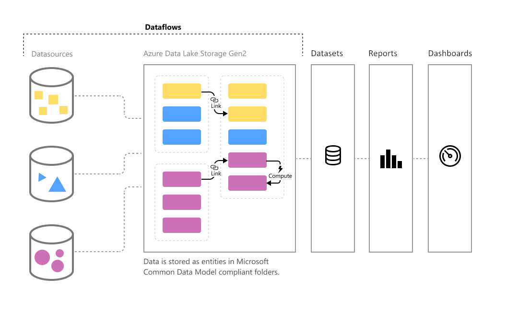
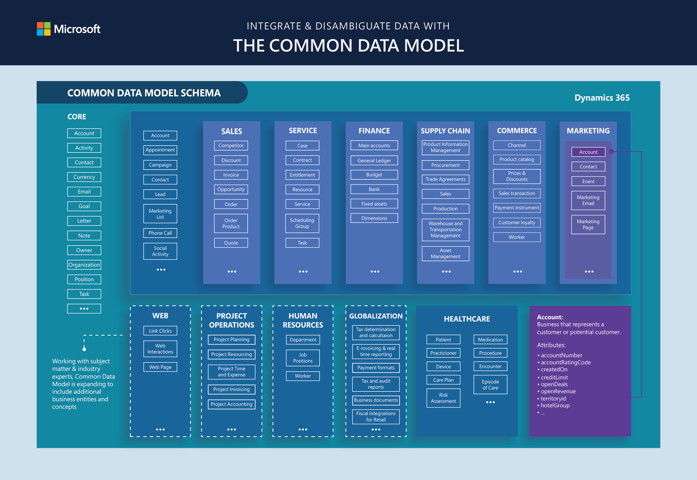
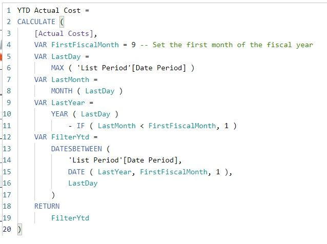
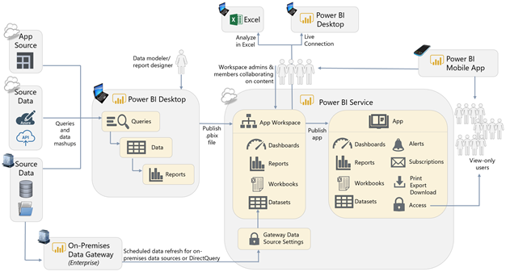

Our services
Premium Analytique offers a wide range of services related to Power BI. Whatever your needs and the maturity level of your systems, their experts will carry out your projects using robust and creative solutions.

Stop impacting your operational applications with Dataflows
Operational systems can be seriously slowed down, or even stopped, by heavy and redundant Power BI queries.
Dataflow helps avoid this unnecessary pressure on systems by minimizing the number of queries or by adding today's data to historical data (incremental refresh).

Increase the impact of your reports using artificial intelligence
The natural reflex generally consists of creating by understanding the needs.
Power BI provides dynamic, AI-powered visuals that help analyze data

Use a single certified data model for all your reports
Self-service Power BI often allows each user to recreate their models and reinterpret the data. The development time is thus extended and the answers diverge.
Effective self-service requires only one certified data model. Each user logs in to create their reports, which eliminates a lot of development and ensures a single interpretation of the data.
The use of Row Level Security helps ensure information security.

Standardize your definitions using the Common Data Model
The information is named differently depending on the source system. Microsoft's Common Data Model is a lexicon that standardizes names based on best practices. Using the Common Data Service reduces confusion, facilitates development and above all makes our reporting templates easier to use. Tools such as the Power BI Helper make it easy to document the model.

Improve the performance of your reports with high standards of modeling and DAX code.
Poor data modeling and poorly chosen code, often modeled on Excel, are the main causes of slow reporting.
Premium Analytique offers high standards of modeling and coding. The first step is to put the code in the right place (SQL, M or DAX) and then use the sophisticated code that has been created for this purpose.
Premium Analytique partners with Entreprise DNA for the training of its employees.

Clarify your data governance
Without clear governance, increasing the number of users and reports can harm user experience and report impact.
Premium Analytique can help you determine roles and responsibilities as well as configure security and workspaces according to the development cycle of each report.